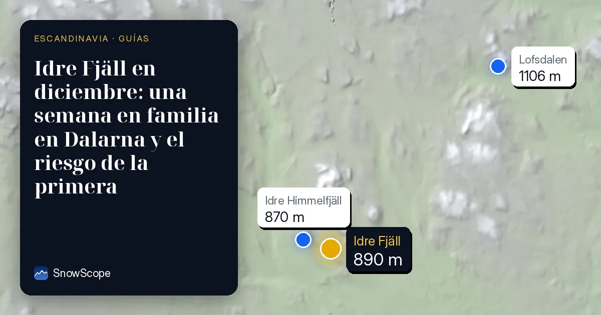

Idre Fjäll en diciembre: una semana en familia en Dalarna y el riesgo de la primera
Principios de diciembre en Idre Fjäll es una apuesta, pero la semana antes de Navidad y la propia semana de Navidad ofrecen muchas mejores probabilidades. En un 15 de diciembre típico, la media montaña (733 m) tiene 32 cm—justo por encima de la línea de 30 cm donde esquiar se siente fácil en las pistas preparadas. La forma del mes importa mucho más que la nieve total.
Consulta la previsión de nieve en tiempo real de Idre Fjäll en la app SnowScopeEspesor de nieve, alertas de nieve polvo y mapa 3D, gratis.
Cuándo reservar si puedes elegir
Solo el 39 % de los inviernos anteriores tuvieron 30 cm o más a media montaña en la primera semana de diciembre. Entre el 8 y el 14 de diciembre, ese porcentaje sube al 52 %. El salto llega en la semana del 15 al 21 de diciembre, cuando el 65 % de los inviernos alcanzan 30 cm o más. La semana de Navidad (22 a 28 de diciembre) es la apuesta más segura: el 76 % de los inviernos tienen buena cobertura entonces.
En la cima (888 m) el panorama es aún mejor. La semana de Navidad ve buena nieve en el 83 % de los inviernos. Si tus fechas son flexibles, retrasarte una semana marca una diferencia real en tus probabilidades de esquiar sobre una base sólida.


El riesgo de reservar principios de diciembre
El invierno pasado (2025–26) muestra por qué principios de diciembre parece incierto. Media montaña tenía solo 28 cm el 15 de diciembre y 22 cm la Nochebuena. Era esquiable en las pistas preparadas, pero las rocas asomaban por los lados, y muchas laderas necesitaban un acicalado cuidadoso.
Si tienes que reservar la primera semana de diciembre, ten un plan de respaldo. O busca más al norte en montañas más altas, o prepárate para esquiar solo en las pistas gestionadas y acepta cobertura fina en algunos lugares. La semana de Navidad del invierno pasado fue mucho mejor: media montaña tenía 29 cm el 24 de diciembre.
Cómo ha cambiado el mes
Diciembre solía tener más nieve. En los primeros 15 inviernos de nuestros registros (1980–81 a 1994–95), media montaña promedió 39 cm en diciembre. En los 15 inviernos más recientes (2011–12 a 2025–26), eso bajó a 29 cm. El porcentaje de semanas de Navidad con 30 cm cayó del 87 % al 60 %.
Este es un cambio real, pero no significa que diciembre sea poco fiable ahora—solo que necesitas elegir tus fechas cuidadosamente. Las semanas de mediados a finales de mes siguen siendo bastante seguras por estándares regionales.
La altura marca la diferencia
La cima (888 m) siempre tiene más nieve que la base (578 m). En la semana de Navidad, media montaña tiene 30 cm o más en el 76 % de los inviernos, pero la cima lo alcanza en el 83 %. El primer día habitual con 30 cm a media montaña es el 7 de diciembre; en la cima es el 30 de noviembre—más de una semana antes.
Si tu familia se siente cómoda en laderas más pronunciadas y en pistas altas, tienes mejores probabilidades de encontrar una buena base. El desnivel es pequeño (310 m), pero esos metros cuentan en diciembre.
¿Qué hay de Sälen en su lugar?
Sälen, más al sur en Dalarna, se parece en el mapa pero tiene probabilidades de nieve en diciembre más débiles. Sus colinas redondeadas dan un valor único en toda la zona: 28 cm en un típico 15 de diciembre. Solo el 48 % de los inviernos ven 30 cm en la semana del 15 al 21 de diciembre, comparado con el 65 % en media montaña de Idre.
Si necesitas un plan de respaldo, Sälen no lo es. Si puedes viajar más lejos, las montañas más altas de Noruega o el noroeste de Suecia ofrecen profundidad más fiable en diciembre.
Pasos prácticos antes de reservar
Idre Fjäll publica precios de remonte mediante reserva dinámica en su sitio oficial. Comprueba el coste exacto para tus fechas antes de comprometerte. Ni aquí ni en Sälen pudimos confirmar un precio fijo el 13 de noviembre.
Reserva la semana del 15 al 28 de diciembre si las fechas son flexibles. Si tienes que reservar principios de diciembre, pide una cláusula de cancelación gratuita y comprueba el mapa de nieve de nuevo a finales de noviembre. Los días cortos significan planificar cuidadosamente alrededor de la luz, y el frío requiere capas para los esquiadores jóvenes.
Consejos para esquiadores
- Evita el 1 al 7 de diciembre: solo el 39 % de los inviernos tienen 30 cm a media montaña. La primera semana es una apuesta.
- Apunta al 15 al 28 de diciembre: la semana antes de Navidad y la semana de Navidad dan probabilidades del 65–76 % de 30 cm o más a media montaña.
- Esquía las pistas altas si puedes: la cima (888 m) tiene buena nieve en el 83 % de los inviernos en la semana de Navidad, comparado con el 76 % a media montaña.
- Reserva con cláusula de cancelación si las fechas de diciembre están fijadas meses antes, y vuelve a comprobar el pronóstico de nieve a principios de diciembre.
- Lleva capas y planifica el día alrededor de la luz diurna corta. La nieve fina del 24 de diciembre del invierno pasado muestra por qué el acicalado y la elección cuidadosa de línea importan en la cobertura de principios de temporada.
Sobre estas cifras
Los espesores de nieve de las estaciones son la nieve más profunda en las pistas altas en la fecha indicada; son estimaciones para una zona, no una medida en un punto. Las previsiones pueden cambiar. Consulta siempre el boletín oficial de aludes antes de salir fuera de pista.
Boletines oficiales de aludes: Lavinprognoser (Naturvårdsverket)
Citar este informe
Para investigación, docencia o prensa: cifras y gráficos reutilizables libremente bajo CC BY 4.0 con esta cita.
SnowScope (2026), Idre Fjäll en diciembre: una semana en familia en Dalarna y el riesgo de la primera, https://snowscope.app/blog/es/2026/11/idre-fjall-december-family-ski-budget-sweden.html, consultado el 2026-11-14
SnowScope (Atlas Labs). (2026, November 14). Idre Fjäll en diciembre: una semana en familia en Dalarna y el riesgo de la primera. SnowScope snow reports. https://snowscope.app/blog/es/2026/11/idre-fjall-december-family-ski-budget-sweden.html
BibTeX
@misc{snowscope2026idrefjalldecemberfamilys,
author = {{SnowScope (Atlas Labs)}},
title = {Idre Fjäll en diciembre: una semana en familia en Dalarna y el riesgo de la primera},
year = {2026},
month = nov,
howpublished = {\url{https://snowscope.app/blog/es/2026/11/idre-fjall-december-family-ski-budget-sweden.html}},
note = {Published 2026-11-14 20:11 UTC; accessed 2026-11-14}
}· CC BY 4.0 · Métodos, datos y herramientas →
Idre Fjäll: nieve y temperatura según la altura, este invierno vs el pasado (herramientas) →
Sigue Idre Fjäll
Gratis: un aviso cuando llega la nieve y la previsión cada mañana.